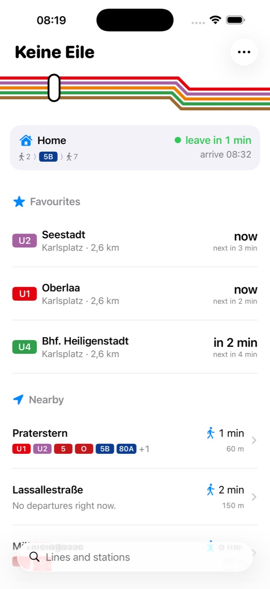
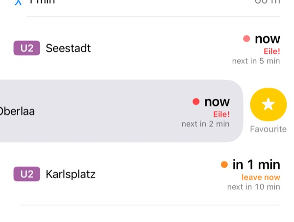
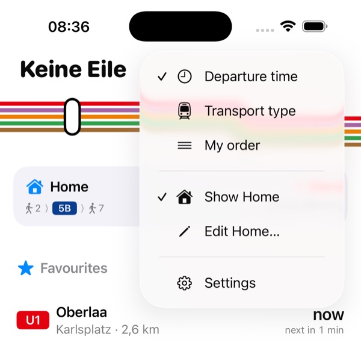
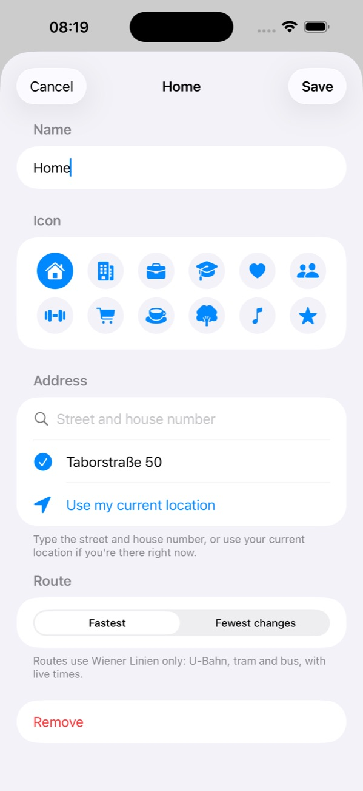
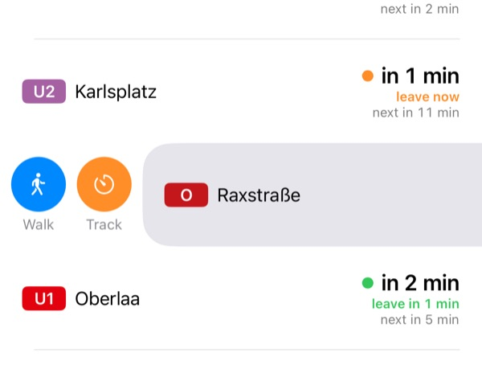
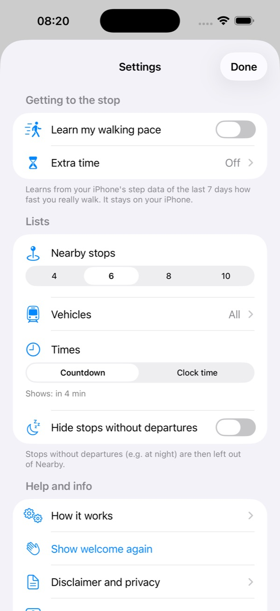
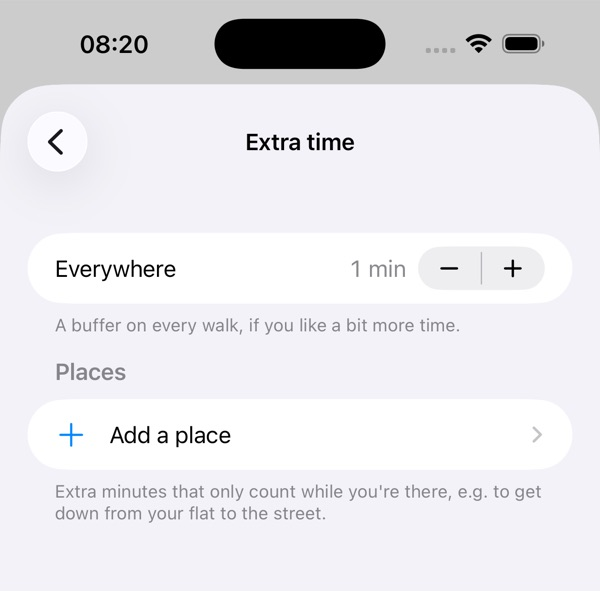
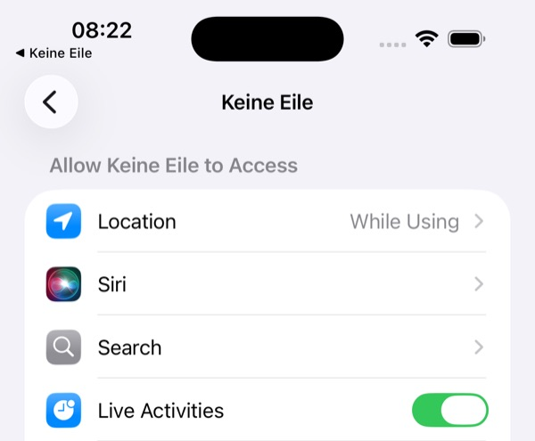
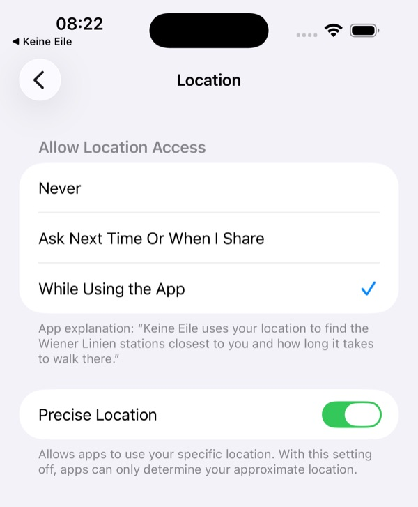

Independent app · not an official Wiener Linien app
Guides and troubleshooting
How to get the most out of Keine Eile, and what to do when something doesn't work.
Guides
The main screen
Open the app and you see, from top to bottom:
- Your destination: the fastest way there and when to leave.
- Favourites: the lines you saved.
- Nearby: the stations closest to you, sorted by walking time. Tap one to see all its lines, disruptions and lift outages.
Each departure has a status:
- leave in 5 min: you have time.
- leave now: start walking.
- Eile!: you'll only make it if you hurry.
Looking for a stop that isn't nearby? Use the search field at the bottom: type a line ("U1", "13A") or a station ("Stephansplatz").

Save a favourite
- Open a station (from Nearby or the search).
- Swipe left on the line and direction you take.
- Tap the yellow star, Favourite.
The line now appears under Favourites on the main screen, in your widgets and for Siri. A favourite is always one line, one direction, at one stop.
To remove it, swipe left on the favourite again and tap Remove. To change the order, tap … → My order, then press and hold a favourite and drag it.

Set your destination
Keine Eile can show the fastest way to one place you go often, such as home or work.
- On the main screen, tap … → Edit Home…. (If you haven't set one yet, you can also tap the card at the top.)
- Give it a name and pick an icon.
- Type the street and house number and choose the address, or tap Use my current location if you're there right now.
- Choose Fastest or Fewest changes, then tap Save.
Tap the card to see every step of the trip. To hide the card, press and hold it; show it again from the … menu.


Follow a departure on your Lock Screen
- Open a station and swipe right on a line.
- Tap Track.
The departure now counts down on your Lock Screen and in the Dynamic Island, including when to leave. It ends by itself two minutes after the departure. Starting a new one replaces the old one.
Walk, next to it, opens walking directions to the stop in Apple Maps.

Make walking times fit you
Tap … → Settings and look under Getting to the stop.
- Learn my walking pace: the app looks at your iPhone's step data from the last 7 days and adjusts the walking times to how fast you really walk. Your step data stays on your iPhone.
- Extra time: add a buffer to every walk (Everywhere), or only at certain places (Add a place), for example the minutes it takes to get down from your flat to the street.
The status of every departure updates straight away.


Add a widget
Home Screen:
- Press and hold an empty spot on your Home Screen until the apps jiggle.
- Tap Edit in the top-left corner, then Add Widget.
- Search for Keine Eile.
- Choose Favourites or Way home, pick a size and tap Add Widget.
To choose which favourites the widget shows, press and hold the widget and tap Edit Widget.
Lock Screen: press and hold the Lock Screen, tap Customise → Lock Screen, tap the widget area and add Keine Eile.
Ask Siri
Siri needs the app's name in the sentence. Try:
- "Keine Eile, when do I need to leave?"
- "When should I leave with Keine Eile?"
- "Keine Eile, how do I get home?"
Siri answers with the favourite you need to leave for first, or the fastest way to your destination. You'll also find both in the Shortcuts app, for example to run every weekday at 8:00.
Troubleshooting
No stops are shown
If the app says "Location access is turned off" or "Precise location is off", it can't find the stops near you or work out the walk.
- Open the iPhone Settings app.
- Tap Apps → Keine Eile → Location.
- Choose While Using the App.
- Turn on Precise Location.
Does it say "No stations within 1 km"? Keine Eile only covers Vienna. Outside the Wiener Linien network, you can still use the search and your favourites.


"No connection" or grey times
An orange banner and grey times mean the latest departures couldn't be loaded. The app shows the last known times and tries again every 30 seconds.
- Check that your iPhone is online (Wi-Fi or mobile data).
- In Settings → Apps → Keine Eile, make sure Mobile Data is on.
- Pull down on the main screen to refresh by hand.
If it happens everywhere, the Wiener Linien service itself may be down for a moment.
Track does nothing
Live Activities are probably turned off for Keine Eile. Go to Settings → Apps → Keine Eile and turn on Live Activities (see the screenshot above).
Widget problems
- It doesn't update every minute: iOS decides how often widgets refresh, usually every 5 to 15 minutes. The widget counts down in between, and opening the app refreshes everything.
- "Add favourites in Keine Eile": save at least one favourite first.
- "Open Keine Eile to share your location": open the app once, so the widget knows where you are.
- "Set an address in the app": set up your destination.
Siri doesn't react
- Say the app's name in the sentence: "Keine Eile, when do I need to leave?" Just "When do I need to leave?" won't work.
- Siri may write the name differently, for example "Keine Eila". That's fine.
- Check that Siri is allowed for the app: Settings → Apps → Keine Eile → Siri.
Walking pace can't be learned
If the app says "Allow Motion & Fitness in Settings", go to Settings → Privacy & Security → Motion & Fitness and turn on Keine Eile. It uses the step data of the last 7 days, so it works best once you've carried your iPhone for a few walks.
Other problems
- A departure was wrong or late: times come from Wiener Linien's live data and can be off. Allow some extra time when it matters.
- "No Wiener Linien connection nearby": you're outside the network, so there's no trip to plan.
- "Couldn't plan the way there right now": the journey planner didn't answer. It tries again within a minute.
- See the introduction again: … → Settings → Show welcome again.
Still stuck? Write to support@keineeile.app. Please tell us your iPhone model and iOS version, and add a screenshot if you can. More answers are on the support page.